Hidakagawa, Wakayama: things to do, food and stays
Hidakagawa · Wakayama
Hidakagawa
Highlighted on the Wakayama map.
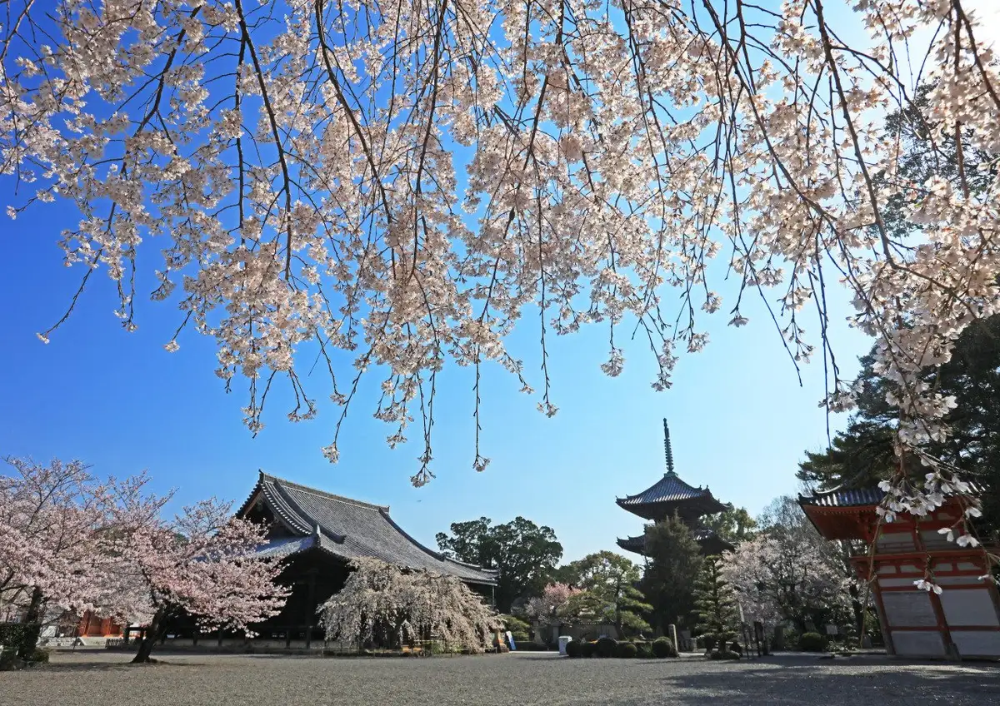
Stay
コスモポート（天文公園）
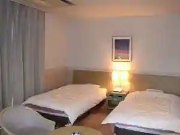
Kosumopoto (Tenmon Koen)
かわべ温泉 お宿喜作
Kawabe Onsen O Yado Kisaku
Inn at Kawabe Onsen in Hirakawaoda, Hidakagawa.
きのくに中津荘
Kinokuni Nakatsu So
鳴滝バンガロー
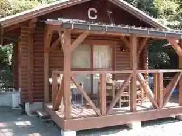
Narutaki Bangaro
美山温泉 愛徳荘
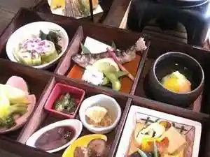
Miyama Onsen Aitoku So
Inn at Miyama Onsen in Hatsuyukawa, Hidakagawa.
Dining
あんちん
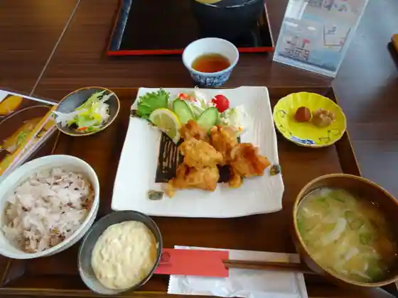
Anchin
愛徳荘
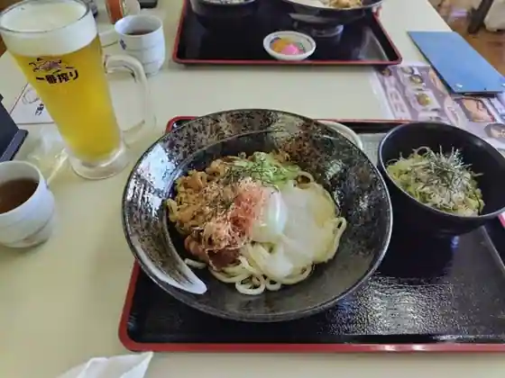
Aitoku So
喜作
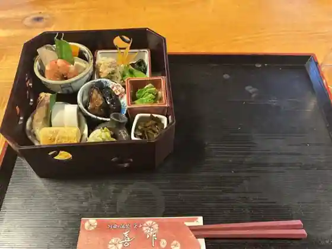
Kisaku
雲水
Unsui
relier
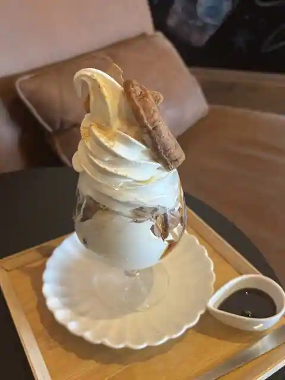
relier
あんちん別邸 石蔵
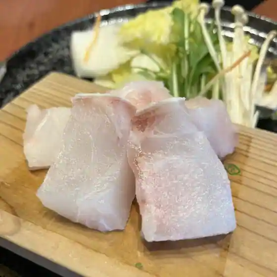
Anchin Bettei Ishigura
道の駅 San Pin中津
Michi No Eki San Pin Nakatsu
椋の木
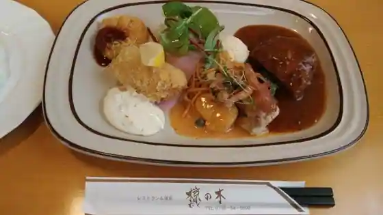
Muku No Ki
ハラペコキッチン
Harapeko Kitchen
ほろほろ亭
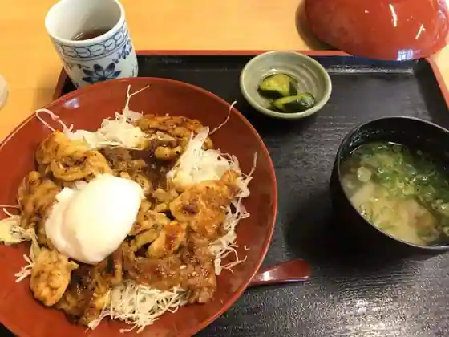
Horohoro Tei
かわべテニス公園
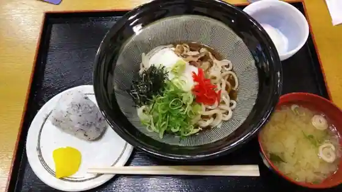
Kawabe Tenisu Koen
飯盛食堂
Imori Shokudo
サウンドカフェ ネイロ
Saundo Cafe Neiro
サイテラス
Sai Terrace
こむぎっ子
Komugitsu Ko
Sights
Nippon'ichi Tanoshii Yahhopointo
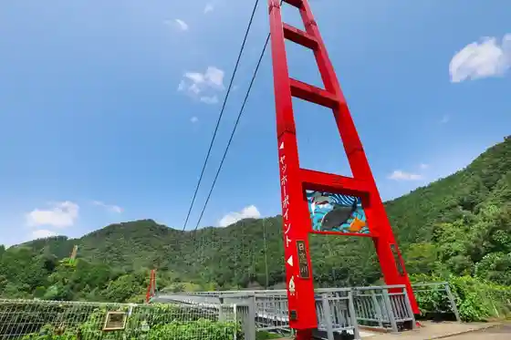
Dojoji
Narutaki Bangaro / Narutaki Oto Campground
Kawabe Tenisu Park
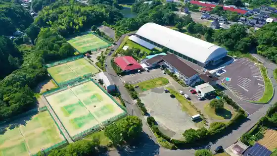
Roadside Station SanPin Nakatsu
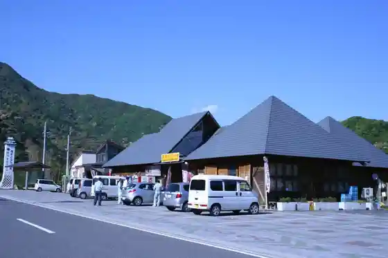
Kawabe Tenmon Park
Rifuresshueria Miyama no Sato Forest Park Nippon'ichi Nagai Fujidana Rodo
Makoto Tsuma Yama
Michi no Hotto Suteshon Miyama Village
Miyama Onsen Aitoku So
Mikuniyama